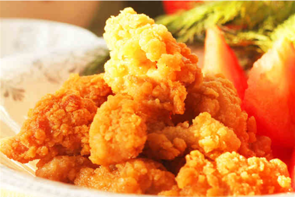
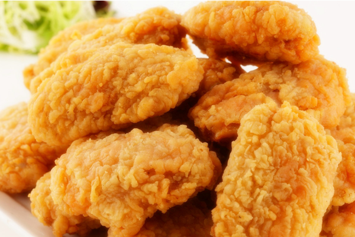

帖子详情
孩子最爱吃的鸡米花，在家轻松做，实惠又美味！
鸡米花不光孩子爱吃，大人见了也忍不住会吃几个，去吃洋快餐时孩子会经常点上一份，但是自从升入高中，学习越来越紧张，出去吃饭的时候很少，有时馋了会念叨几句。当妈的当然要满足孩子的愿望，就自己动手做吧，先腌制好鸡肉，再油炸，做出来味道很好吃，孩子说以后不再出去买了，想吃时就让妈妈做，好吧，在孩子的眼中当妈的真的成了无所不能的人了。

步骤：

- 1.鸡胸肉洗净切成小块
- 2.葱姜切好，放入鸡块中
- 3.加入盐、料酒、生抽、蚝油、五香粉、黑胡椒粉
- 4.拌匀腌制半小时
- 5.碗中打散鸡蛋，将鸡块裹上蛋液；
- 6.粘上干粉；
- 7.放入烧热油的锅中小火炸；
- 8.捞出沥油；
- 9.开中火将油温升高将鸡块反复炸一遍即可。
鸡米花不光孩子爱吃，大人见了也忍不住会吃几个，去吃洋快餐时孩子会经常点上一份，但是自从升入高中，学习越来越紧张，出去吃饭的时候很少，有时馋了会念叨几句。当妈的当然要满足孩子的愿望，就自己动手做吧，先腌制好鸡肉，再油炸，做出来味道很好吃，孩子说以后不再出去买了，想吃时就让妈妈做，好吧，在孩子的眼中当妈的真的成了无所不能的人了
鸡米花不光孩子爱吃，大人见了也忍不住会吃几个，去吃洋快餐时孩子会经常点上一份，但是自从升入高中，学习越来越紧张，出去吃饭的时候很少，有时馋了会念叨几句。当妈的当然要满足孩子的愿望，就自己动手做吧，先腌制好鸡肉，再油炸，做出来味道很好吃，孩子说以后不再出去买了，想吃时就让妈妈做，好吧，在孩子的眼中当妈的真的成了无所不能的人了。